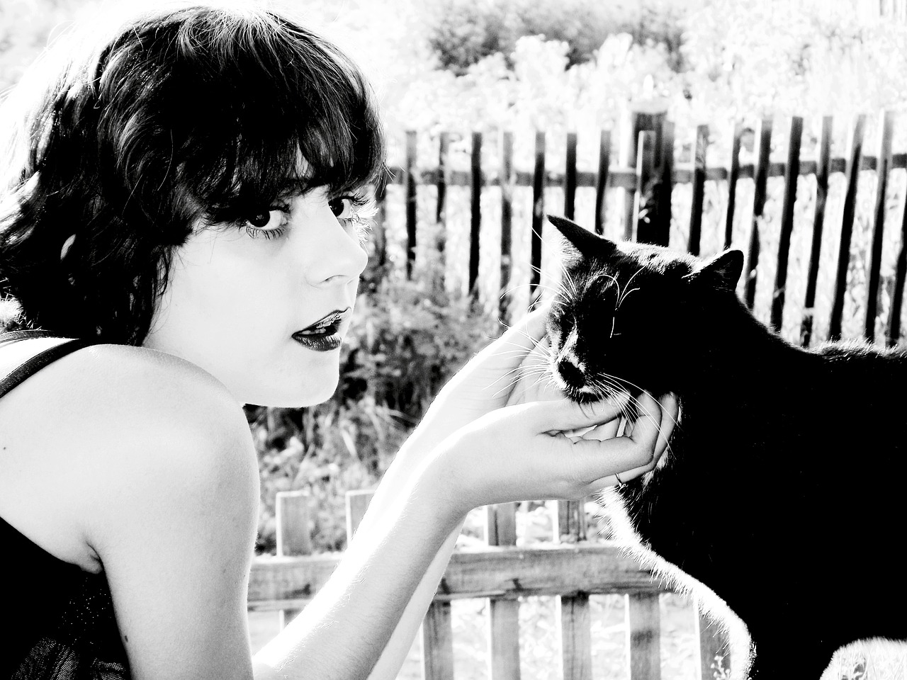
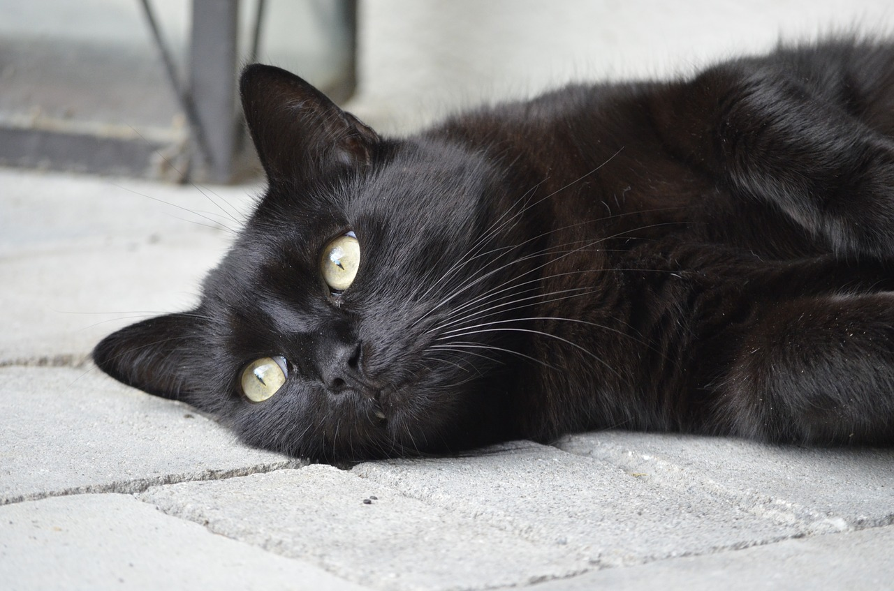
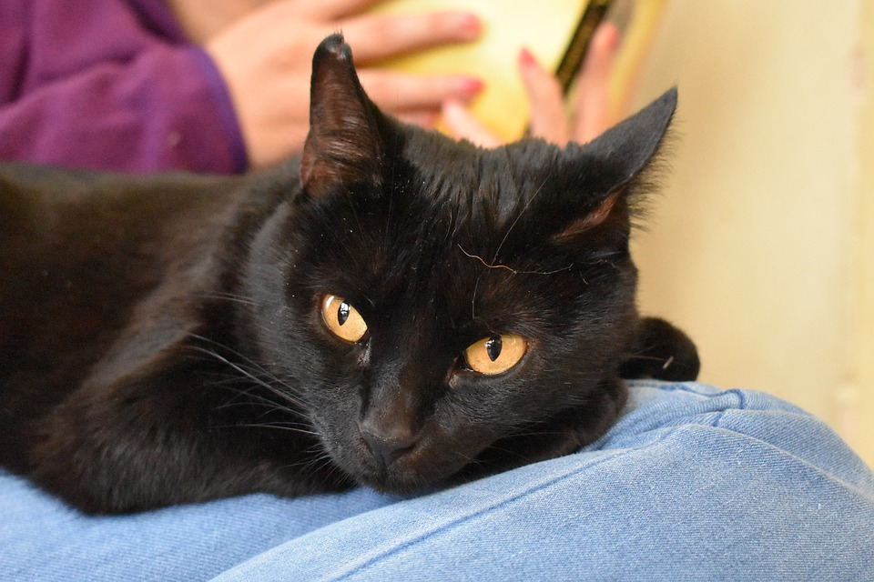

Mówi się, że "orange is new black". I kiedy serial na Netflixie, hiszpańskie pomarańcze i rudzielce są teraz bardzo na topie, pamiętajmy, że mody przemijają. Za to czerń jest ponadczasowa.
Mówi się, że "orange is new black". I kiedy serial na Netflixie, hiszpańskie pomarańcze i rudzielce są teraz bardzo na topie, pamiętajmy, że mody przemijają. Za to czerń jest ponadczasowa.
Przykłady doskonałości czarnych kotów:
  